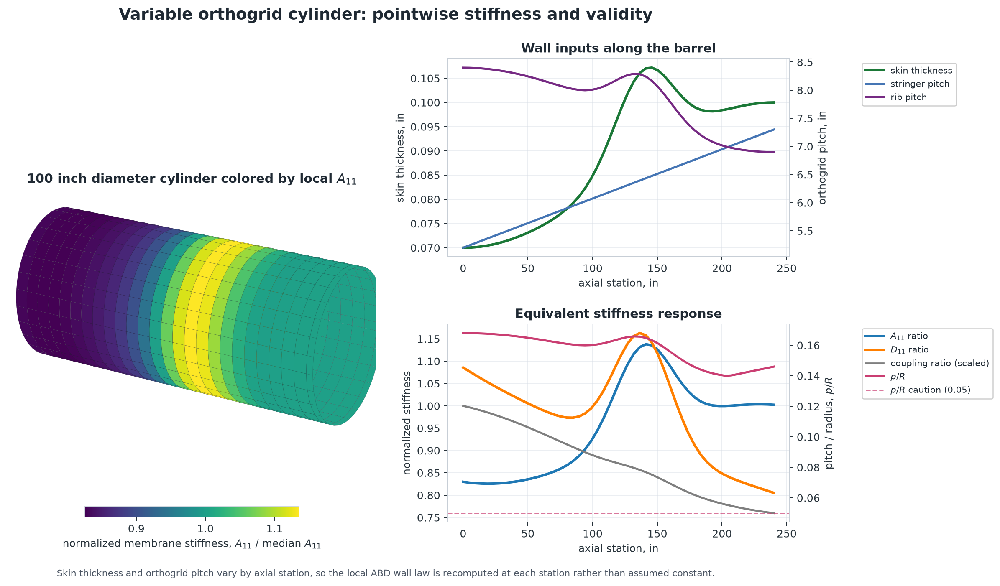
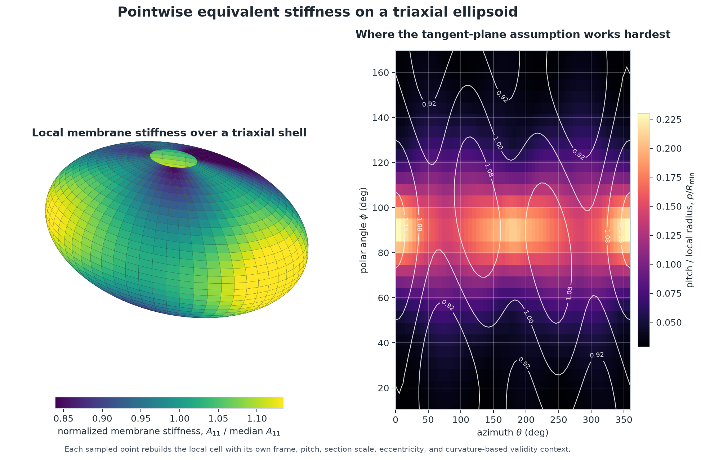

Stiffness Field Maps
These examples show why Tensyl treats equivalent stiffness as a local constitutive model that can be evaluated over a surface rather than as one closed-form answer. The first case is practical: a cylindrical barrel with skin thickness and orthogrid spacing that vary along the axis. The second case is harder: a triaxial ellipsoid with pointwise pitch, orientation, and section changes.
The mechanics loop is the same in both:
- ask the surface for a point, frame, and curvature scale;
- build a tangent-plane stiffened cell in that local frame;
- homogenize the cell into an ABD stiffness;
- attach validity ratios to the result;
- repeat wherever the wall definition changes.
These are stiffness-field examples, not sizing sign-offs
Tensyl computes local equivalent stiffnesses and validity signals here. It does not compute buckling loads, joint stresses, imperfections, margins, or allowables. The pictures are useful because the assumptions behind them are visible, not because a color map is convincing on its own.
Variable Orthogrid Cylinder
Start with the simpler surface: a 100 inch diameter cylinder with 1 inch tall orthogrid stiffeners. The skin thickness, stringer spacing, and rib spacing vary smoothly by axial station. That is a common pattern in early sizing: a barrel gets heavier where load path, cutout, or local stiffness needs demand it, and stays light everywhere else.
The figure colors the cylinder by normalized axial membrane stiffness,
A11 / median(A11). The right-side plots show what changed in the input and
what Tensyl reported back: normalized A11, normalized D11, membrane-bending
coupling, and the p_over_R validity signal.

The most useful quantities to plot here are:
- Design inputs: skin thickness and both orthogrid pitches, because they are the knobs the example turns.
- Membrane response:
A11 / median(A11), because stringer spacing and skin thickness directly affect axial load carrying. - Bending response:
D11 / median(D11), because eccentric 1 inch stiffeners change bending stiffness faster than the skin alone would suggest. - Coupling and validity: the
Bcoupling ratio andp_over_R, because they say when a reduced interpretation or tangent-plane assumption is starting to earn scrutiny.
The key point is not that the cylinder is exotic. It is not. The useful bit is that the local equivalent stiffness changes by station while the cylinder supplies the local frame and curvature scale. Tensyl recomputes that stiffness wherever the design changes, then lets you plot the consequences instead of guessing where the property table got interesting.
Ellipsoid Showpiece
Now make the surface harder. A triaxial ellipsoid is not the shape anyone reaches for when they want a tidy closed-form stiffened shell calculation. That is the point.
The local skin thickness, stiffener pitch, stiffener orientation, and section
scale vary with position. The left panel colors the ellipsoid by normalized
local A11 membrane stiffness. The right panel shows p_over_R, the
pitch-to-local-radius ratio that says where the tangent-plane approximation is
working hardest. The white contours are normalized A11 again, overlaid so the
stiffness pattern stays readable against the heatmap.

At each ellipsoid sample point:
surface.point_at(phi, theta)supplies position, local frame, curvature, andmin_radius;- the cell factory computes local pitch, section scale, stiffener angle, skin thickness, and eccentricity;
EnergyHomogenizerreturns a localABDStiffness;ValidityContextrecordsp_over_R,h_over_R, and response-length checks.
That is the useful part. The curved surface does not bend the ABD matrix on its own. The pointwise cell factory changes the local equivalent stiffness, while the surface tells Tensyl how to read that stiffness locally.
Rebuild the Figures
The full generator lives at
docs/examples/scripts/stiffness_field_maps.py.
It writes both committed documentation images:
uv run python docs/examples/scripts/stiffness_field_maps.py
The cylinder field setup follows this shape:
from tensyl import (
Cylinder,
EnergyHomogenizer,
HomogenizedStiffnessField,
StiffnessCache,
ValidityContext,
orthogrid_cell,
)
surface = Cylinder(radius=50.0, length=240.0)
def cell_factory(surface, point):
del surface
design = cylinder_design_at(point.u)
skin = isotropic_plate(material, thickness=design["skin_thickness"], frame=point.frame)
skin_face = 0.5 * design["skin_thickness"]
return orthogrid_cell(
skin=skin,
stringer_section=stringer_section(design),
rib_section=rib_section(design),
stringer_spacing=design["stringer_spacing"],
rib_spacing=design["rib_spacing"],
stringer_eccentricity=skin_face + stringer_centroid_z,
rib_eccentricity=skin_face + rib_centroid_z,
frame=point.frame,
)
def validity_context(point, cell):
pitch = max(cell.metadata["stringer_spacing"], cell.metadata["rib_spacing"])
return ValidityContext(
characteristic_height=1.0,
pitch=pitch,
min_radius=point.min_radius,
response_length=60.0,
)
field = HomogenizedStiffnessField(
surface,
cell_factory,
EnergyHomogenizer(),
cache=StiffnessCache(),
validity_context_factory=validity_context,
)
The script includes the complete material values, geometry-derived 1 inch sections, pointwise design rules, Matplotlib styling, and image export.
Why This Is Useful
Closed-form equivalent-plate formulas are valuable, but they usually want a friendly geometry, repeated layout, and fixed assumptions. The cylinder begins with a friendly geometry but changes the stiffness definition by station. The ellipsoid changes the surface frame, curvature, pitch, angle, and section scale. In both cases, Tensyl still computes a consistent local equivalent stiffness at each point.
That does not make the result automatically valid. It does make the assumptions visible enough to argue with, which is a more useful starting point than a closed-form table that has nowhere to record the curvature it assumed away.